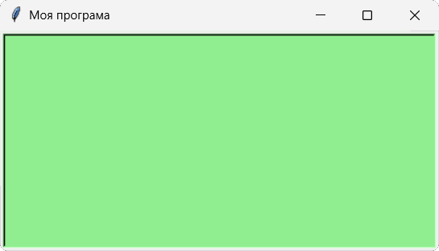
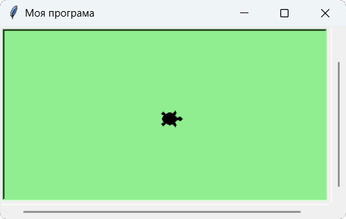
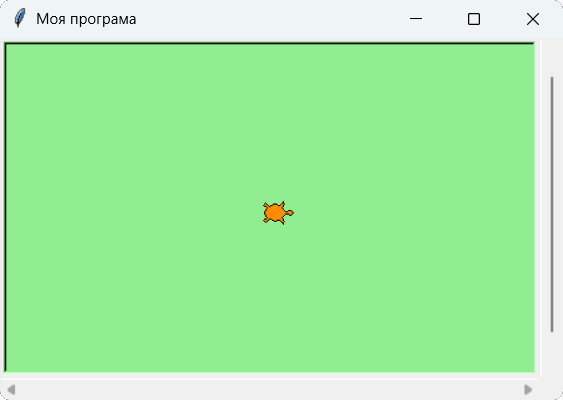

Теоретичний матеріал
У цьому розділі ти дізнаєшся, як створювати екран - площину де буде жити наша "Черепашка", як створювати самого виконавця та давати йому ім'я, як використовувати основні функції черепашки для зміни зовнішнього вигляду, кольору, тощо.
Підключення модуля Turtle
Клас Turtle — це вбудований модуль Python для створення 2D графіки за допомогою виконавця “черепашка” і являється одним з найпростіших способів вивчення комп’ютерної графіки засобами написанням коду.
import turtle
Створення екрану
screen = turtle.Screen()
де, screen – ім'я екрану.
Які дії можна виконувати з екраном? Та багато чого, наприклад: налаштовувати заголовок екрану, змінювати колір фону та його розмір. Встановлювати початкову позицію черепашки, очищувати екран, керувати анімацією та закривати екран при натисканні.
Основні методи налаштування екрану:
| Метод | Опис |
|---|---|
| title() | Встановлює заголовок екрану. Наприклад: screen.title("Моя програма") |
| bgcolor() | Встановлює колір фону екрану. Наприклад: screen.bgcolor("light blue") |
| setup() | Встановлює розмір та позицію екрану. Наприклад: screen.setup(width=600, height=400) |
| reset() | Очищає екран від усіх зображень, черепашка повертається в початкове положення з координатами (0, 0). |
| clear() | Очищає екран від усіх зображеннь, черепашка залишається в кінцевому положенні. |
| exitonclick() | Закриває екран при натисканні на нього. |
Створення черепашки
name = turtle.Turtle()
де, name – ім'я черепашки (наприклад: ben, soloha, тощо).
Черепашка може - змінювати власний вигляд, змінювати колір та розмр ліній, рухатися, малювати, керувати анімацією та багато іншого.
Основні команди черепашки:
| Команда | Опис |
|---|---|
| shape() | Встановлює форму черепашки. Наприклад: turtle.shape("turtle"). Можливі значення: "arrow", "turtle", "circle", "square", "triangle", "classic". За замовчуванням черепашка має форму "classic". |
| shapesize() | Встановлює розмір черепашки. Наприклад: turtle.shapesize(2, 2) - збільшує розмір черепашки у два рази як по ширині так і по висоті. |
| pensize() | Встановлює товщину лінію (в пікселях). Наприклад: turtle.pensize(7) - черепашка буде залишати на екрані лінію товщиною 7 пікселів. |
| color() | Встановлює колір черепашки та колір лінії, яку залишає черепашка при русі. Наприклад: name.color("red") або name.color("#333333") |
| pencolor() | Встановлює лише колір лінії, яку залишає черепашка при русі. Колір черепашки не змінюється. Наприклад: name.pencolor("red") або name.pencolor("#333333") |
| fillcolor() | Встановлює лише колір черепашки, колір лінії не змінюється. Наприклад: name.fillcolor("red") або name.fillcolor("#333333") |
| hideturtle() | Приховує черепашку (черепашка не відображається на екрані). Наприклад: name.hideturtle(). Зверніть увагу, що прихована черепашка прискорює малювання складних фігур. |
| showturtle() | Робить черепашку знову видимою. Наприклад: name.showturtle(). |
Завершення роботи програми.
Щоб програма не закривалася відразу після виконання, можна використати команду turtle.done() або screen.exitonclick(). Вони дозволяють зберегти вікно відкритим, поки користувач не закриє його вручну.
Приклади
1. Створимо екран світло-зеленого кольору, додамо заголовок "Моя програма", та встановимо його розмір 550x320.
Код програми
import turtle
screen = turtle.Screen()
screen.title("Моя програма")
screen.bgcolor("lightgreen")
screen.setup(width=550, height=320)
turtle.done()
Результат

2. Додамо черепашку на створене вікно у попередньому прикладі та змінимо її вигляд.
Код програми
import turtle
screen = turtle.Screen()
screen.title("Моя програма")
screen.bgcolor("lightgreen")
screen.setup(width=550, height=450)
soloha = turtle.Turtle()
soloha.shape('turtle')
turtle.done()
Результат

3. Змінимо колір черепашки на оранжевий.
Код програми
import turtle
screen = turtle.Screen()
screen.title("Моя програма")
screen.bgcolor("lightgreen")
screen.setup(width=550, height=450)
soloha = turtle.Turtle()
soloha.shape('turtle')
soloha.fillcolor("#FF8C00")
turtle.done()
Результат

Практична робота
Вірним результатом виконання є відповідність створеної вами програми зразку.
Зразок

1. Імпортуйте модуль turtle.
2. Встановіть заголовок екрану "Бібліотека Turtle".
3. Встановіть розмір екрану 450х350.
4. Встановіть колір екрану світло-блакитний ("lightblue").
5. Змініть форму черепашки на "turtle".
6. Встановіть білий колір черепашки та пера ("white")
7. Збільшіть роззмір черепашки у 2 рази.
8. Збережіть файл з кодом програми у власну папку з іменем turtle_pw_1_01.py.
Завдання
Початковий рівень
1. Створіть екран з рожевим фоном.
2. Створіть виконавця черепашку.
Середній рівень
1. Створіть екран темно сірого кольору розміром 800х600.
2. Створіть черепашку у формі кола оранжевого кольору.
Достатній рівень
1. Створіть екран світло-зеленого кольору розміром 800х600.
2. Створіть двох виконавців черепашка з іменами: ben та Soloha? відповідно червоного та синього кольорів.
Високий рівень
1. Своріть екран власного розміру та кольору, з заголовком "Turtle".
2. Ствріть у вікні декілька виконавців (не менше трьох) різного кольору та розміру.
Типові помилки
Python розрізняє великі та малі літери ("s" та "S" - це різні літери для Python)
Правильно
name = turtle.Turtle()
screen = turtle.Screen()
Не правильно
name = turtle.turtle()
screen = turtle.screen()